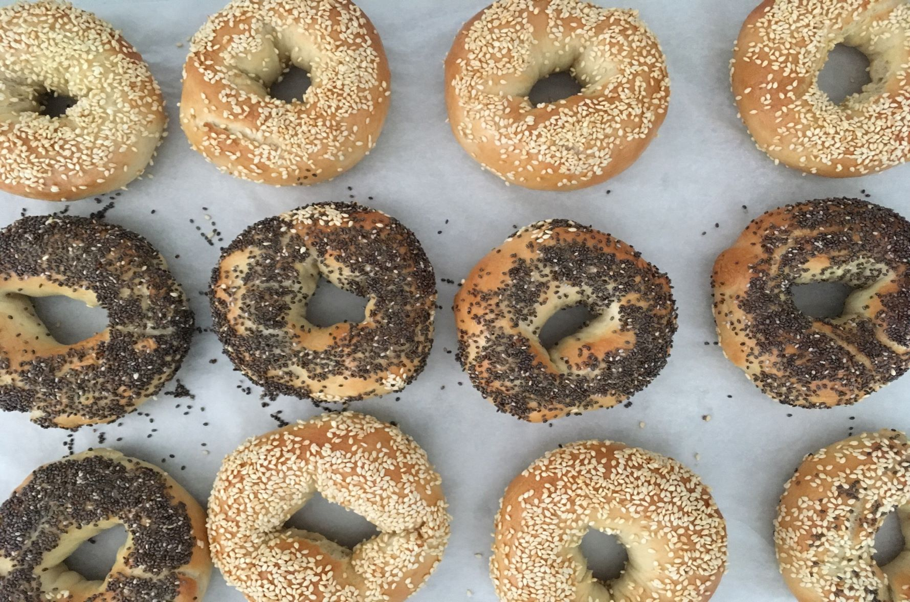

Bread Machine Bagels Recipe
Ingredients
- 1 cup warm water (110 degrees F/45 degrees C)
- 1 ½ teaspoons salt
- 2 tablespoons white sugar
- 3 cups bread flour
- 2 ¼ teaspoons active dry yeast
- 3 quarts boiling water
- 3 tablespoons white sugar
- 1 tablespoon cornmeal
- 1 egg white
- 3 tablespoons poppy seeds
Directions
- Step 1: Place water, salt, sugar, flour and yeast in the bread machine pan in the order recommended by the manufacturer. Select Dough setting.
- Step 2: When cycle is complete, let dough rest on a lightly floured surface. Meanwhile, in a large pot bring 3 quarts of water to a boil. Stir in 3 tablespoons of sugar.
- Step 3: Cut dough into 9 equal pieces, and roll each piece into a small ball. Flatten balls. Poke a hole in the middle of each with your thumb. Twirl the dough on your finger or thumb to enlarge the hole, and to even out the dough around the hole. Cover bagels with a clean cloth, and let rest for 10 minutes.
- Step 4: Sprinkle an ungreased baking sheet with cornmeal. Carefully transfer bagels to boiling water. Boil for 1 minute, turning half way through. Drain briefly on clean towel. Arrange boiled bagels on baking sheet. Glaze tops with egg white, and sprinkle with your choice of toppings.
- Step 5: Bake in a preheated 375 degree F (190 degrees C) oven for 20 to 25 minutes, until well browned.
Nutrition Facts
- Per Serving: 50 calories
- protein 1.4g
- carbohydrates 8.8g
- fat 1.3g
- sodium 404.4mg